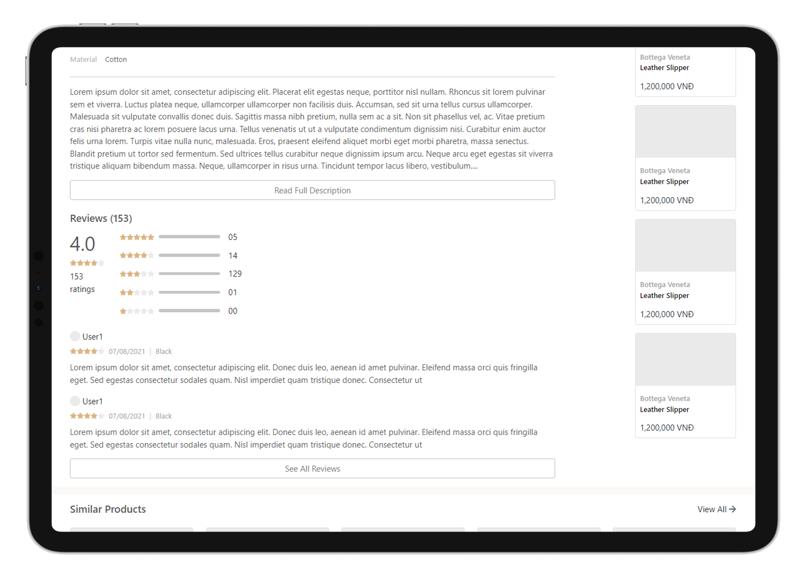
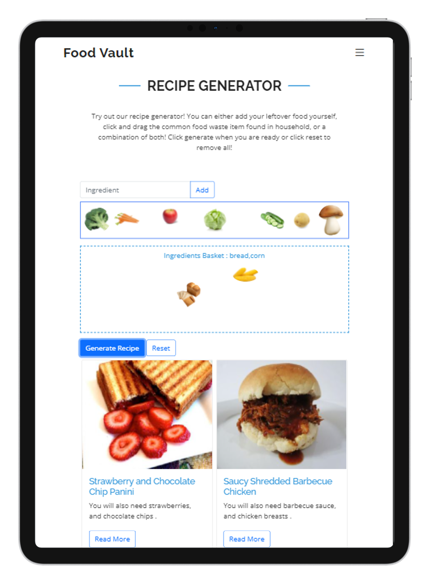
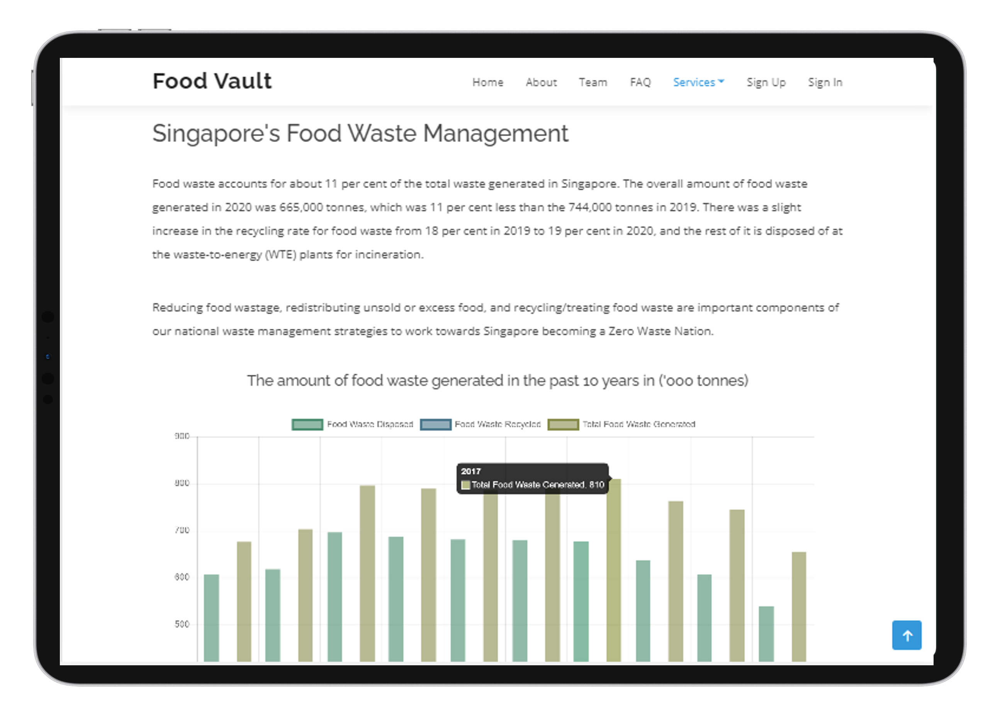
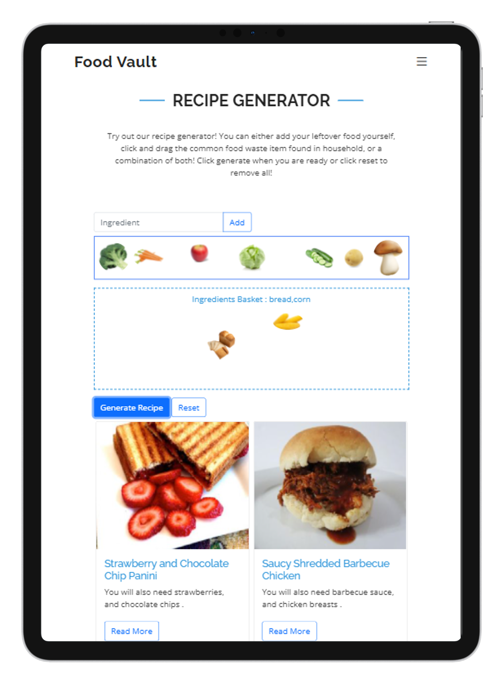
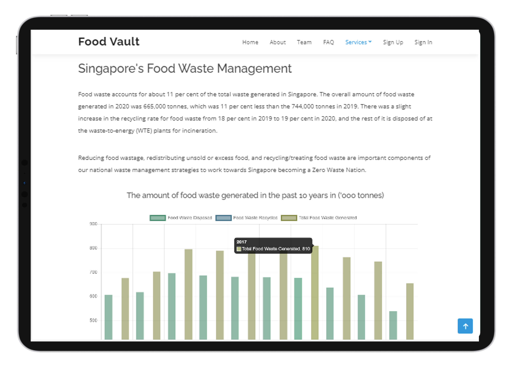

Business Analytics Project
Data Analytics
Data Analytics | Dashboard | SAS | Semester Project
Analyzing and presenting credit card data, consisting of over 240k transactions, sign up campaigns etc over 5 years and providing recommendations
Business Questions answered includes : How to increase sign-ups, how to improve transaction and profits based on customer behavior etc.


 


